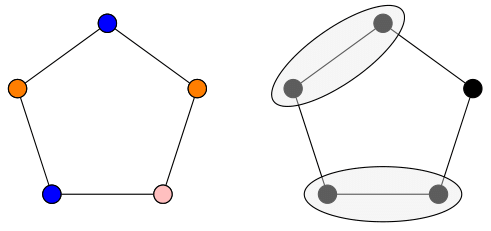

Graph Independence

Let \(G = (V,E)\). A set \(I\subseteq V(G)\) is an
independent set (or
stable set) if no two vertices in \(I\) are
connected by an edge. The
independence number of \(G\), denoted \(\alpha(G)\) is the maximum size of an independent set. Graphs
with independence number one are the complete graphs (graphs in which every pair of vertices is connected by an edge.) The graphs which have
independence number two are precisely the complements of
triangle-free graphs. Although
they are one step above independence number one graphs so to speak, their structure can vary wildly. Independence number two graphs are of particular interest
when it comes to
Hadwiger's Conjecture. See
this survey by Paul Seymour.